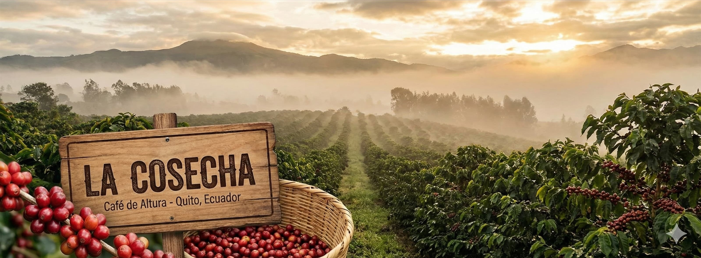

Nuestro Café de Altura
En las fértiles tierras de Quito, a más de 2.800 metros sobre el nivel del mar, cultivamos con dedicación el mejor café de altura. Nuestro proceso artesanal y respetuoso con el medio ambiente garantiza una taza con sabores y aromas únicos, heredados de generaciones de caficultores quiteños.
En La Cosecha, cada grano cuenta una historia de tradición, paciencia y amor por la tierra. Nuestro café es cultivado bajo la sombra de árboles nativos, respetando los ciclos naturales y asegurando la más alta calidad en cada cosecha.